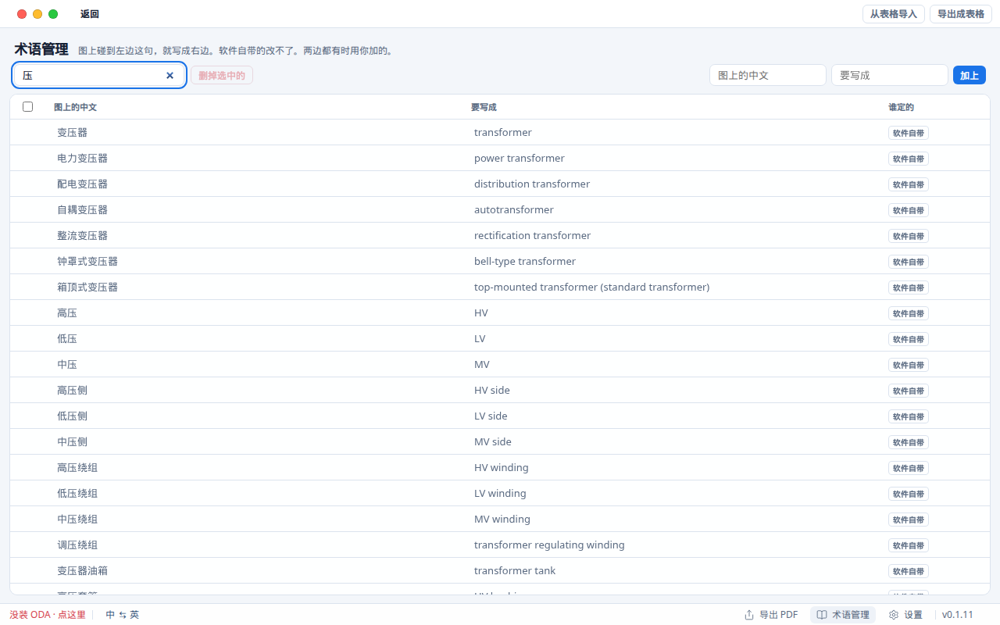

Windows
Windows 10 或 11，64 位。安装包 约 64 MB。
下载 Windows 版
安装包还没签名，第一次打开会被拦。点「更多信息」，再点「仍要运行」。
在用 WorkBuddy、ChatGPT 或 Claude？它们可以替你运行图译，不用你点。把下面这句话发给它，它会把整个文件夹的图纸译好。
我电脑上装了图译（Tuyi）。请用它把「图纸」文件夹里的 DWG / DXF 译成英文，另存新文件，原图不要改。
助手要能在你的电脑上运行程序，一般是桌面版，而且要你同意。

译好的字写进一份新文件。标题栏、注释、块属性、标注、表格都会译。

内置建筑、开关、变压器常用词，对上的不用联网。也能加你自己的词。

多张图加进来，点「一起译」，一张张写好。
免费，不用注册。没对上术语库的句子，用你自己的 DeepL 或 Azure 翻译。
v0.1.11，免费
Windows 10 或 11，64 位。安装包 约 64 MB。
安装包还没签名，第一次打开会被拦。点「更多信息」，再点「仍要运行」。
M1 到 M4 都选这个。不确定就看苹果菜单里的「关于本机」。
打开 DMG，把图译拖进应用程序。第一次打开时右键图标，选「打开」。
DXF 装上就能译。译 DWG 还要装免费的 ODA File Converter。